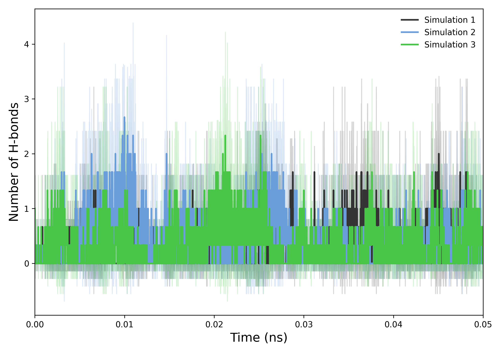
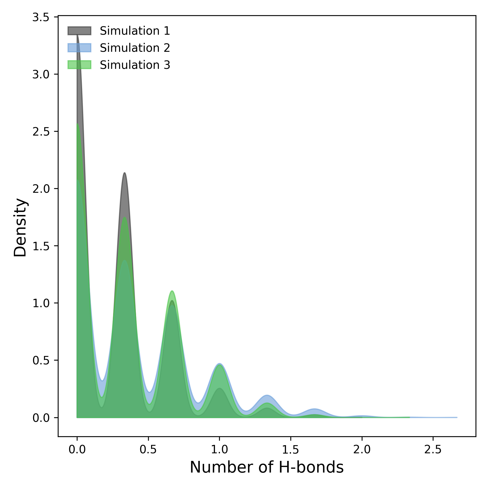

Hydrogen Bond Analysis
Overview
DynamiSpectra provides a comprehensive and versatile analytical framework for quantifying and monitoring hydrogen bond dynamics throughout molecular dynamics simulations. Using input data in standardized .xvg file format, this module enables detailed evaluation of hydrogen bonding interactions that are essential for understanding molecular stability, conformational changes, and interaction patterns.
This analysis offers an in-depth view of hydrogen bond formation and disruption over time. When multiple simulation replicates are available, DynamiSpectra calculates averaged hydrogen bond counts and associated variability measures, such as standard deviation, to provide statistically robust insights. The software also supports analysis of individual replicas, offering flexibility when replicate data is limited or unavailable.
Command line in GROMACS to generate .xvg files for the analysis:
gmx hbond -s Simulation.tpr -f Simulation.xtc -num Simulation.xvg -tu ns
Note: The hydrogen bond analysis module in DynamiSpectra also supports the analysis of inter-residue hydrogen bonds within the protein, as well as hydrogen bonds between the protein and ligand. Users simply need to select the appropriate groups during analysis and generate the corresponding .xvg output files.
def hbond_analysis(output_folder, *simulation_file_groups, hbond_config=None, density_config=None)

How to interpret: This plot illustrates the temporal evolution of hydrogen bond counts within the system. Stable trends indicate persistent hydrogen bonding and structural integrity, while fluctuations may reflect conformational changes or dynamic instabilities. Comparative analysis across simulations can reveal consistencies or discrepancies attributable to differing initial conditions or simulation parameters. Variations in hydrogen bond numbers over time often correspond to the formation or disruption of critical molecular interactions, providing valuable insight into the system’s behavior.
def plot_density(results, output_folder, config)
{kind=link}

How to interpret: This plot represents the density distribution of hydrogen bonds observed throughout the simulations. The x-axis corresponds to the number of hydrogen bonds, while the y-axis denotes their frequency density. Regions with higher density indicate more frequent occurrences of specific hydrogen bond counts. Comparing density profiles across simulations enables the identification of similarities or divergences in hydrogen bonding patterns, offering valuable insights into the stability and interaction dynamics of the molecular system.
Complete code
import numpy as np
import matplotlib.pyplot as plt
from scipy.stats import gaussian_kde
import os
def read_hbond(file):
"""
Reads hydrogen bond data from a GROMACS .xvg file.
Parameters:
- file (str): Path to the .xvg file
Returns:
- times (np.ndarray): Time points (in ns)
- hbonds (np.ndarray): Number of hydrogen bonds at each time
"""
try:
times, hbonds = [], []
with open(file, 'r') as f:
for line in f:
if line.startswith(('#', '@', ';')) or line.strip() == '':
continue
try:
values = line.split()
if len(values) >= 2:
time, hbond = map(float, values[:2])
times.append(time / 1000.0) # convert ps to ns
hbonds.append(hbond)
except ValueError:
continue
if len(times) == 0 or len(hbonds) == 0:
raise ValueError(f"File {file} does not contain valid data.")
return np.array(times), np.array(hbonds)
except Exception as e:
print(f"Error reading file {file}: {e}")
return None, None
def check_simulation_times(*time_arrays):
"""
Ensures all simulation time arrays are aligned across replicates.
"""
for i in range(1, len(time_arrays)):
if not np.allclose(time_arrays[0], time_arrays[i]):
raise ValueError(f"Simulation times do not match between file 1 and file {i+1}")
def plot_hbond(results, output_folder, config):
"""
Plots average number of hydrogen bonds over time with std deviation.
Parameters:
- results (list of tuples): Each tuple contains (time, mean, std) for a simulation group
- output_folder (str): Directory to save the plots
- config (dict): Plot customization options
"""
labels = config.get('labels', [f'Simulation {i+1}' for i in range(len(results))])
colors = config.get('colors', ['#333333', '#6A9EDA', '#54b36a', '#f2444d', '#fc9e19'])
alpha = config.get('alpha', 0.2)
figsize = config.get('figsize', (7, 6))
xlabel = config.get('xlabel', 'Time (ns)')
ylabel = config.get('ylabel', 'Number of H-bonds')
label_fontsize = config.get('label_fontsize', 12)
xlim = config.get('xlim', None)
ylim = config.get('ylim', None)
plt.figure(figsize=figsize)
for i, (time, mean, std) in enumerate(results):
color = colors[i % len(colors)]
plt.plot(time, mean, label=labels[i], color=color, linewidth=2)
plt.fill_between(time, mean - std, mean + std, color=color, alpha=alpha)
plt.xlabel(xlabel, fontsize=label_fontsize)
plt.ylabel(ylabel, fontsize=label_fontsize)
plt.legend(frameon=False, loc='upper right', fontsize=10)
plt.tick_params(axis='both', which='major', labelsize=10)
if xlim:
plt.xlim(xlim)
else:
max_time = max([np.max(t) for t, _, _ in results])
plt.xlim(0, max_time)
if ylim:
plt.ylim(ylim)
plt.tight_layout()
os.makedirs(output_folder, exist_ok=True)
plt.savefig(os.path.join(output_folder, 'hbond_plot.tiff'), format='tiff', dpi=300)
plt.savefig(os.path.join(output_folder, 'hbond_plot.png'), format='png', dpi=300)
plt.show()
def plot_density(results, output_folder, config):
"""
Plots KDE density distributions of H-bond counts.
Parameters:
- results (list of tuples): Each tuple contains (time, mean, std) for a simulation group
- output_folder (str): Directory to save the plots
- config (dict): Plot customization options
"""
labels = config.get('labels', [f'Simulation {i+1}' for i in range(len(results))])
colors = config.get('colors', ['#333333', '#6A9EDA', '#54b36a', '#f2444d', '#fc9e19'])
alpha = config.get('alpha', 0.5)
figsize = config.get('figsize', (6, 6))
xlabel = config.get('xlabel', 'Number of H-bonds')
ylabel = config.get('ylabel', 'Density')
label_fontsize = config.get('label_fontsize', 12)
xlim = config.get('xlim', None)
ylim = config.get('ylim', None)
plt.figure(figsize=figsize)
for i, (_, mean, _) in enumerate(results):
color = colors[i % len(colors)]
kde = gaussian_kde(mean)
x = np.linspace(0, max(mean), 1000)
plt.fill_between(x, kde(x), color=color, alpha=alpha, label=labels[i])
plt.xlabel(xlabel, fontsize=label_fontsize)
plt.ylabel(ylabel, fontsize=label_fontsize)
plt.legend(frameon=False, loc='upper left', fontsize=10)
plt.tick_params(axis='both', which='major', labelsize=10)
if xlim:
plt.xlim(xlim)
if ylim:
plt.ylim(ylim)
plt.tight_layout()
os.makedirs(output_folder, exist_ok=True)
plt.savefig(os.path.join(output_folder, 'hbond_density.tiff'), format='tiff', dpi=300)
plt.savefig(os.path.join(output_folder, 'hbond_density.png'), format='png', dpi=300)
plt.show()
def hbond_analysis(output_folder, *simulation_file_groups, hbond_config=None, density_config=None):
"""
Main function to perform hydrogen bond analysis.
Parameters:
- output_folder (str): Directory to save the plots
- *simulation_file_groups: Lists of replicate file paths for each simulation group
- hbond_config (dict): Configuration for time-series plot
- density_config (dict): Configuration for KDE density plot
"""
if hbond_config is None:
hbond_config = {}
if density_config is None:
density_config = {}
def process_group(file_paths):
times, hbonds = [], []
for file in file_paths:
time, hbond = read_hbond(file)
if time is None or hbond is None:
raise ValueError(f"Error reading file: {file}")
times.append(time)
hbonds.append(hbond)
check_simulation_times(*times)
return times[0], np.mean(hbonds, axis=0), np.std(hbonds, axis=0)
results = []
for group in simulation_file_groups:
if group:
result = process_group(group)
results.append(result)
if not results:
raise ValueError("At least one simulation group must be provided.")
plot_hbond(results, output_folder, hbond_config)
plot_density(results, output_folder, density_config)